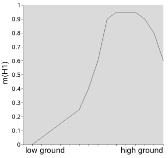

NAME
r.dst.bpn - Calculates Basic Probability Numbers.
(GRASS Raster Program)
DESCRIPTION
This program calculates Basic Probability Numbers (BPNs) for use in a Dempster-Shafer Theory (DST) predictive model.
If you have need for a flexible spatial predictive modelling framework but do not know what DST is, please
refer to the manual page of dst.combine for an introduction.
This module and its manual page have been written with archaeological predictive modelling (APM) in mind,
but should be useful for other cases where presence or absence of objects of interest is to be predicted.
In the following text, replace the term "site" with any other name of an object of interest.
A very simple way to calculate a predictive model is using the dst.predict
wrapper program.
Introduction
A BPN is the basic quantification of one (piece of) evidence in the DST. It expresses the strength of belief in the truth
of a hypothesis in the light of that evidence and without consideration of any other evidence.
A BPN is usually a value mn in the range 0 to 1 for each hypothesis 1..n in the Frame of
Discernment (FOD). The single restriction is that m1..n must sum to 1 for one piece
of evidence. By default, the dst.combine module enforces this restriction by normalising
all evidences, so that other BPN quantification schemes such as ratings can also be used.
In APM, the FOD is taken to consist of two singleton hypotheses and the set of these two:
- H1={"SITE"}
- This proposes that an archaeological site is present.
- H2={"NO SITE}"
- This proposes that no archaeological site is present.
- H3={"SITE","NO SITE}"
- This proposes that no decision can be made about site presence or absence (uncertainty).
h1 and h2 are mutually exclusive exclusive and cover all possible outcomes.
The set of both represents uncertainty and we will refer to this as the "uncertainty hypothesis".
To be precise, the complete set of hypotheses for this FOD also includes the empty set {NULL},
which is of mere mathematical necessity and will be of no further concern.
The purpose of r.dst.bpn is to calculate a BPN for these three hypotheses by using only
two source of evidences readily available in a GIS-based analysis: (a) a CELL format GRASS raster map that shows categories
which are deemed to influence the probability of a site having been established in a location, such
as soil type and quality, distance to water, slope etc. and (b) a GRASS vector map which contains
the locations of already discovered sites as vector points. The latter are used to sample
the raster map in a systematic way. The basic idea is to check for differences in proportions
between the sample (cells with sites) and the population (all other cells in the region).
These differences are used to quantify the strength of belief (BPN) in each of the FOD's three
hypotheses.
The output of this program consists of three raster maps, with basename given by the user
(option output=) and suffixes ".SITE", ".NOSITE" and ".SITE.NOSITE", which encode
the BPNs for the respective hypotheses.
These maps can be combined with BPN maps generated from other sources of evidence
by dst.combine to calculate the overall belief
in H1 or H2 as supported by the given evidence (as well as many other
useful metrics derrived from this).
Details of BPN quantification
In this case of evidence represented as a GRASS raster map, a BPN has to be calculated
for each cell within the current region.
Thus, we need to know, what categories in the CELL evidence map supports or refutes
H1 ("SITE") or H2 ("NO SITE") and to what degree.
The relationship between cell values and degree of support/refutal is given by the
BPN function.
The latter can be linear and monotonous but in principle it can also be arbitrarily complex.
To find an adequately exact BPN function, this program uses a simple approximation strategy.
Let us look at an archaeological example: we want to model belief in the presence or absence
of a certain type of hillfort settlements at different altitudes (evidence "height") in a topographically varied region of interest.
At first glance, the situation looks straight-forward: the higher the terrain, the higher we believe the
chance to find that kind of settlement (i.e. m(H1) closer to "1"), as higher locations are better to defend.
However, even in this simple case, an adequate
BPN function would be more complex. Let us look at a plot of m(H1) vs. "height", as
derrived from some archaeologist's subjective belief:
- Starting at the lowest height, there would first be a flat section
that represents the height range of the low lands in which no forts
were built.
- This would be succeeded by a section with gradually steeper inclination as the height
approaches a range which the prehistoric builders found optimal.
- Within this optimal range, the curve flattens out on a high level.
- Above a certain height however, logistic problems become too great and we do not believe
that prehistoric people were able to cope with them beyond a certain point, thus m(H1)
falls off towards "0" quickly.

Instead of "professional intuition", r.dst.bpn models m(H1) using a statistical
approach.
For this, the user must supply only two things:
- a vector points map S with the locations of known sites;
- a raster map M that represents the evidence (e.g. height).
Optionally, one or more raster maps can be supplied to represent "NO SITE" bias, such
as unsurveyable land (for details see section on "Uncertainty handling").
Likewise, one or more vector point attributes can be chosen to represent "SITE" bias, such
as unfounded trust in the location of a site.
The raster evidence map must be fully categorised, i.e. each cell must represent
a category (e.g. 1='0 to 5 m', 2='5 to 10 m',...) or be NULL (no data).
You can use the r.categorize program to quickly
create such a map from any GRASS raster map.
For each category C in the input evidence map M, r.dst.bpn compares
the overall cell percentage of C in M (Perc(M)) with the percentage
of category C cells that contain a site from S (Perc(S)).
The assumption is that if Perc(M) > Perc(S) at a significant level
then the evidence in M and S supports the hypothesis "NO SITE" for all
cells in M and if Perc(M) < Perc(S) it supports "SITE".
If the difference is found to be of very high signficance, the belief mass assigned
to on of these two hypothesis tends towards "1", if it is low, it tends towards "0".
Just how signficant the difference in percentages is depends on (a) the magnitude of
the difference (b) the size of the sample and (c) the
number of cells in the entire region. This is catered for by calculating a z-statistic
for each case. The z-statistic gives the probability of observing a difference in
proportions as extreme as Perc(M)-Perc(S) under the assumption that
there is no significant difference between Perc(M) and Perc(S).
In effect, this gives the probability of making an error when declaring it
significant (see "Uncertainty handling" for details on how this affects BPN values).
If the total number n of sites in S is greater
than 30, this will be derrived from a standard normal distribution, otherwise from
a t-distribution with n degrees of freedom.
In addition, if the probability of error exceeds a certain threshold (by default 0.05 or 5%),
the belief mass to be shifted will be exponentially weighted, so that more belief mass is
shifted increasingly rapidly to the uncertainty hypothesis as the probability of error drops further
below the threshold. You can adjust the threshold by using the perror parameter.
Often, one will not be restricted as to what category ranges to choose (e.g. 1, 5 or 10 m intervals
for evidence "height"?).
If there are too many categories in M, r.dst.bpn will produce an overfitting
function and a model based on such BPNs will not be able to generalise well, i.e.
its predictions are very likely to be wrong when checked against new data.
On the other hand, if there are extremely few categories, the program might not be able to find
significant evidence that supports either hypothesis. As a safeguard, a chi-square test
is run over all categories. This calculates the probability of making an error when
declaring the overall set of percentage differences significant (see "Uncertainty
handling" for details on how this affects BPN values).
Another option is to use categories with individual ranges.
One could use a priori knowledge about the
region's natural zones to create a more significant categorisation manually
(using r.support):
Cat. Range Label
1 0-1000 plains and valleys
2 1000-1500 hills
3 1500-1700 mountain areas
4 1700-2500 high mountain areas
5 2500-5000 highest mountain areas
In this way, one can approximate arbitrarily complex BPN functions.
Once several sources of evidence have been turned into BPN maps,
they can be registered in a DST knowledge base file using
dst.update and combined to produce
the final predictive map(s) using dst.combine.
Another option is to use the dst.predict wrapper
program for building predictive models in one go.
Handling uncertainty
The greatest merit of DST-based predictive modelling is its capability to explicitly handle
uncertainty. In predictive modelling uncertainty mainly arises because there is direct
evidence for "SITE", but only indirect evidence for "NO SITE": e.g. the fact that no sites
have been reported on terrain type "A" might mean that (a) prehistoric settlers actually
avoided this type of terrain or (b) one of many possible source filters is in effect
and prevented us from finding the sites present on this type of terrain. Maybe it
is rough terrain and could not adequately be surveyed, or it is mostly covered by a
type of land use that has a negative impact on site remains visibility. In cases
like these, we might not be able to decide between "SITE" or
"NO SITE". This inability to decide is the nature of uncertainty.
Consider the dilemma of this situation in classical probability theory: if one states
that "SITE" has a low probability of e.g. 0.49 , then probability theory says that
"NO SITE" = 1 - 0.49 = 0.51. Thus, we are forced to decide in favour of "NO SITE", even
if we feel that we have no sufficient direct evidence to support it.
Dempster-Shafer Theory, on the other hand, gives us the possibility to transfer a
certain amount of this basic probability mass to the uncertainty hypothesis
H3={"SITE","NOSITE"} and thus allows us to postpone decisions about "NO SITE"
until e.g. better information is obtained.
The r.dst.bpn program transfers basic probability mass to the uncertainty hypothesis in one
of three cases:
- The probability P that the oberserved difference in proportion between sample (sites)
and population (entire region) for evidence category C could also be
produced by chance, as calculated by
the z-statistic, is greater > 0. In this case, P is subtracted from the
BPN value for either "SITE" or "NOSITE" and transferred to "SITE or NOSITE"
for category C. This leaves m(H1) or m(H2)
as 1-P, respectively.
- The chi-square test shows that the overall frequencies of categories in the sample
could also have been produced by chance with probability P.
In this case, P is subtracted from the
BPN value for either "SITE" or "NOSITE" and transferred to "SITE or NOSIT"
for all categories.
- The user has supplied one ore more bias maps using the nbias= option.
These are GRASS floating point (FCELL or DCELL) type maps in which every cell
is assigned a value between 0 and 1. These values specify the degree to which
we believe that observed differences are biased towards the "NO SITE" hypothesis.
For each bias map, the following is done: (a) calculate the percentage of cells
BP of each category C that are covered by a bias value larger than
0; (b) calculate the mean value BM of the bias in cells of category
C. For each category C, BM * BP is subtracted from
the belief mass assigned to "NO SITE".
- The user has specified one or more attributes of the site vector point map to
represent the degree to which these points (sites) are biased towards the "SITE" hypothesis using
the sbias= option. Again, these attributes must be floating point values in the
range 0 to 1. Calculations are similar to the "NO SITE" case: The more biased sites present
on a certain category of an evidence maps, the more basic belied mass will be subtracted
from the "SITE" hypothesis and shifted to "SITE or NOSITE".
(Note: The sbias= option is currently broken. DO NOT USE!)
In the first two cases, beliefs are expressed as mathematical probabilities. There is
no obvious difference between the concepts of belief (mass) and probability (mass) here.
In the case of bias maps, the more flexible DST concept of belief may be used to
obtain a quantification in the range 0 to 1 in any way.
Note that no hypothesis can ever achieve a basic probability assignment smaller than
0.01 or larger than 0.98. There is always a tiny bit of doubt left in real life ...
The case of bias maps and attributes needs a bit more explanation:
"NO SITE" bias: e.g. in archaeological predictive modelling,
certain factors can affect the chance to find sites. This may lead to a situation where
the assumed absence of sites leads to a high belief in "NO SITE" even though there
potentially is evidence for "SITE", but it cannot be included in the model.
Common sources of "NO SITE" bias are:
- Geomorphological processes have hidden some sites and exposed others. Soil Erosion
and deposition can severly affect site detectability. In this case, one could
prepare a bias map which has "1" for cells with the highest amounts of deposited
material and "0" for eroded areas (other cells may lie anywhere in between these
extremes).
- Differences in survey density, intensity and systematics may leave some areas less well
covered than others. In this case, one could
prepare a bias map which has "1" for cells were no surveying has been done and
"0" for cells which have been covered by systematic and intrusive surveys.
- Land use can have a heavy impact on site visibility. Sites in dense
forests are much harder to spot than in open fields.
"SITE" bias: sometimes, evidence supporting the presence of sites may also be biased if it rests on false assumptions.
Again, archaeological examples might include:
- A too high degree of convidence in the correctness of the site data (location, dating).
- Inclusion of locations that do not actually qualify as "sites" in a strict sense.
- Modelling with sites that do not all depend on the encironmental evidence as heavily as it
is assumed.
In summary, a high amount of basic probability mass is shifted to uncertainty for category C, if (a) many
cells of category C fall into biased areas and (b) these cells have a high bias
on average and/or many sites on category C are (strongly) biased.
If a logfile is generated by supplying the log= option, detailed information
about the BPN quantifications and bias impacts are produced for the user to review.
Notes
This program was developed as part of the GRASS 5 DST Predictive Modelling Toolkit.
The sbias= option is currently broken. Do not use it!
SEE ALSO
dst.combine
dst.predict
dst.update
r.categorize
r.support
AUTHOR
Benjamin Ducke,
University of Kiel, Germany
Last changed: $Date: 2006/01/03